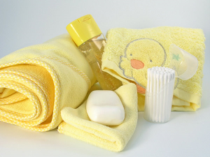

Уход за новорождённым
Первые 9 месяцев своей жизни малыш находится под защитой материнского организма от внешних воздействий. После рождения ребенок непосредственно начинает взаимодействовать с многообразным окружающим миром и поэтому еще больше нуждается в защите и уходе.
Гигиенические процедуры
Одним из важных моментов ухода за новорождённым является ежедневное купание, которое должно осуществляться сразу же после выписки ребёнка из родильного дома. К этому времени мать ещё не совсем окрепла, нуждается в отдыхе.
Помогать ей купать ребёнка должен кто-нибудь из членов семьи (лучше – муж).
Перед купанием необходимо заранее приготовить ребёнку полотенце, бельё (распашонку, кофточку, пелёнки, подгузник, одеяльце), мыло, мочалку и кувшинчик с водой для обливания ребёнка после купания.
Купают ребёнка в специально предназначенной для него ванночке, которую предварительно тщательно моют с мылом и ополаскивают кипятком. Воды в ванночку наливают столько, чтобы она прикрывала всё тело ребенка. В первые недели его жизни, до заживления пупочной ранки, необходимо использовать для купания кипячёную воду (температура 36,5-37°). Температуру воды измеряют специальным водяным термометром. Температура окружающего воздуха должна быть не ниже 22°.
Ребёнка осторожно, медленно погружают в воду завёрнутым в пелёнку, чтобы он не испугался. При этом мать обязательно свои действия сопровождает ласковыми, нежными словами, разговаривает с ребёнком. Соблюдение этих правил крайне необходимо, чтобы вызвать у малыша положительные эмоции, тогда он будет в последующем «с удовольствием» принимать гигиенические ванны. Если же он испугается быстрого погружения в воду или вода будет слишком тёплой или холодной, то это вызовет беспокойство, крик и в дальнейшем ребёнок будет долго отрицательно реагировать на купание.
Если мать купает одна, то она одной рукой (левой) поддерживает головку ребенка, а другой моет его мягкой мочалкой с мылом. При наличии помощника головку поддерживает он.
Головку моют осторожно, чтобы вода не попадала в глаза, рот и нос. Мыло применяется 1-2 раза в неделю. Купают младенца в первом полугодии жизни ежедневно. После купания ополаскивают его водой из кувшина, температура которой на 1° ниже, чем в ванночке. При этом мать укладывает ребенка на свою левую руку лицом вниз, обхватив его грудь ладонью. Ребёнок свободно «висит» на кисти матери. Обливание ребёнка водой после купания является первой необходимой закаливающей водной процедурой.
Применять рекомендуемый многими раствор марганцовокислого калия при купании нецелесообразно, так как он отрицательно действует на кожу ребёнка и может вызвать повышенную её сухость. А вот купать в настоях трав, таких как ромашка, череда, пустырник – очень полезно. Они имеют успокоительный эффект, особенно полезный перед сном, и заживляющий, помогающий от прыщиков и покраснений.
Продолжительность купания устанавливается индивидуально для каждого младенца, но в первые недели жизни она не должна превышать 5-7 мин. После купания его заворачивают в полотенце и вытирают промокательными движениями, чтобы не травмировать нежную кожу ребёнка. Тщательно осушают все кожные складки и естественные углубления. Необоснованной является боязнь многих родителей попадания воды в уши ребёнка. Необходимо только после купания хорошо высушить их специальными марлевыми или ватными фитильками.
Когда лучше купать ребёнка, родители решают индивидуально в зависимости от режима дня его и остальных членов семьи. Предпочтительнее купание перед вечерним кормлением, так как после ванны малыш хорошо спит, что даёт возможность отдохнуть матери. Во всех случаях нельзя купать ребёнка сразу после кормления.
Кроме ежедневной гигиенической ванны, ребёнка необходимо регулярно подмывать после каждого опорожнения кишечника и мочеиспускания. Лучше всего подмывать проточной водой из крана при отрегулированной в нём необходимой температуре воды (37 °С). При этом мать держит ребёнка левой рукой так, как при ополаскивании после ванны, а правой рукой подмывает его, пользуясь детским мылом. При таком способе подмывания вода из крана будет непосредственно вытекать на руки матери. Это даст возможность предупредить попадание на кожу ребёнка чрезмерно тёплой или холодной воды.
Каждое утро ребёнка следует умывать, лучше после первого кормления. Ватным тампоном, смоченным в тёплой кипячёной воде, протирают лицо, ушные раковины и вход в наружный слуховой проход, следя за тем, чтобы в него не попадала вода. Глаза промывают от наружного угла к внутреннему отдельным тампоном для каждого глаза. Нос очищают ватными жгутиками. При наличии в носу сухих корочек жгутик смачивают прокипячённым растительным или вазелиновым маслом. Полость рта не обрабатывается, чтобы не поранить нежную слизистую оболочку. При появлении у ребёнка на слизистой рта в области щёк, дёсен и языка белого налёта, что может свидетельствовать о грибковом заболевании, называемом молочницей, необходимо обратиться к врачу.
Следует обращать особое внимание на состояние кожи, особенно в естественных складках: нет ли сыпи, покраснения, опрелости. Наличие на коже гнойничков является грозным симптомом, в этом случае следует срочно пригласить на дом участкового врача. Необходимо помнить, что в первый месяц жизни ребёнка не носят в детскую поликлинику, а врач наблюдает и осматривает его только на дому. Гнойнички следует отличать от безобидных мелких точечек, слегка выступающих на коже, которые исчезают сами по себе.
Ногти обрезают впервые обычно на третьей неделе жизни ребёнка. Ножницы должны быть предварительно продезинфицированы. Если уже с момента рождения ногти длинные, то, чтобы ребёнок не поцарапался, следует пеленать его в кофточке с закрытыми рукавами.
Особого внимания у новорождённого ребёнка требует пупочная ранка, которую недаром называют «ахиллесовой пятой». Пупочный канатик (остаток пуповины), оставшийся после отделения ребёнка от матери, обычно отпадает на 4-6-е сутки жизни. После этого остаётся пупочная ранка, которая полностью зарубцовывается к концу второй недели жизни ребёнка. До этого времени необходим тщательный уход за пупком. Осуществляет его патронажная медицинская сестра, а мать только должна быть ей в этом помощницей. При наличии кровянистых или серозных выделений из пупочной ранки лучше всего обрабатывать её 5-процентным раствором марганцовокислого калия или 5-процентным раствором йода: ватную палочку погружают в один из названных растворов и смазывают пупочную ранку, не выходя за её пределы (повторное использование ватной палочки при этом не допускается). При выделении из пупочной ранки желтоватого или жёлто-зелёного гноя нужно немедленно вызвать врача.
Комната и постель новорождённого
К моменту появления в доме новорождённого следует тщательно подготовиться. Если не удаётся сделать косметического ремонта квартиры, то генеральная уборка является обязательной. В комнате, где будет находиться ребёнок, температура должна поддерживаться на уровне 20- 22 °С.
Основной мебелью в этой комнате является кроватка ребёнка. Её надо поставить в светлом тёплом месте, однако не у окна и не у батареи центрального отопления, предусмотреть свободный подход к ней. Кроватка может быть деревянной или металлической, с решётчатыми боковыми стенками для хорошего доступа воздуха. В последнее время чаще пользуются деревянными. Такую кроватку удобно мыть. Ведь малыш, став старше, будет в ней вставать и может попытаться грызть её верхние края, в связи с чем кроватку, особенно её стенки, необходимо регулярно хорошо мыть с мылом.
Постель ребёнка должна быть ровной, матрац – жёстким, не прогибающимся под тяжестью веса малыша, иначе он будет лежать в изогнутом положении, что для его неокрепшего скелета очень вредно. Изготавливают детские матрацы из стружки, морской травы, мочала. Перо, пух, вата, поролон не пригодны, так как, во-первых, они мягкие, во-вторых, могут вызвать перегревание ребёнка и, в-третьих, в них накапливается органическая пыль. Подушки малышу в первое время вообще не нужно. Позже можно использовать маленькую плоскую (не пуховую) подушечку.
Стирать детское бельё следует отдельно от белья других членов семьи, используя детское мыло или детский порошок.
Для ухода за новорожденным ребёнком нужны:
- ванночка для купания,
- кувшин для воды,
- термометры для измерения температуры тела, воды и помещения,
- мягкая мочалка,
- ножницы,
- гребешок,
- детское мыло, шампунь,
- полотенце,
- градуированные бутылочки с сосками,
- баллончики для клизмы,
- вата или ватные диски,
- пипетки,
- прокипячённое вазелиновое или растительное масло,
- дезинфицирующие средства (сода, марганцовокислый калий),
- крем «Бепантен» (от раздражений и покраснений на коже),
- грелка,
- специально укомплектованная аптечка матери и ребенка.